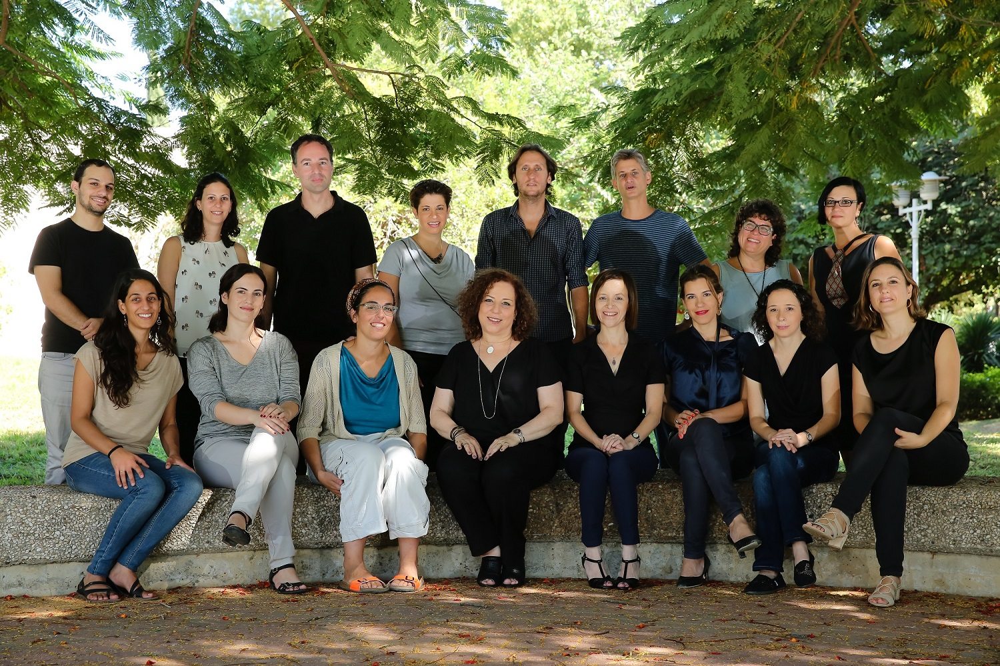

About

The Positive Family and Developmental Psychology Lab is headed by Professor Orit Taubman – Ben-Ari, a psychologist and professor at the Louis and Gabi Weisfeld School of Social Work at Bar-Ilan University in Israel. The lab is aimed at gaining a deeper understanding of human life-span development, with a special interest in life transitions and their potential to invoke personal growth, as well as the unique stage of adolescence and the tendency of adolescents to engage in risk taking. For the past 20 years, our research has documented the variety of outcomes exhibited in response to a wealth of life events, along with the factors that contribute to these outcomes. We have been especially interested in advancing research and theory about positive aspects – both as predictors and as consequences of normal life transitions. In parallel, we have been extensively involved with issues relating to young drivers’ driving styles and the shield provided to them by family and friends. This site offers information on who we are, our current research projects, our recent research papers and books, news items, and how to contact us.